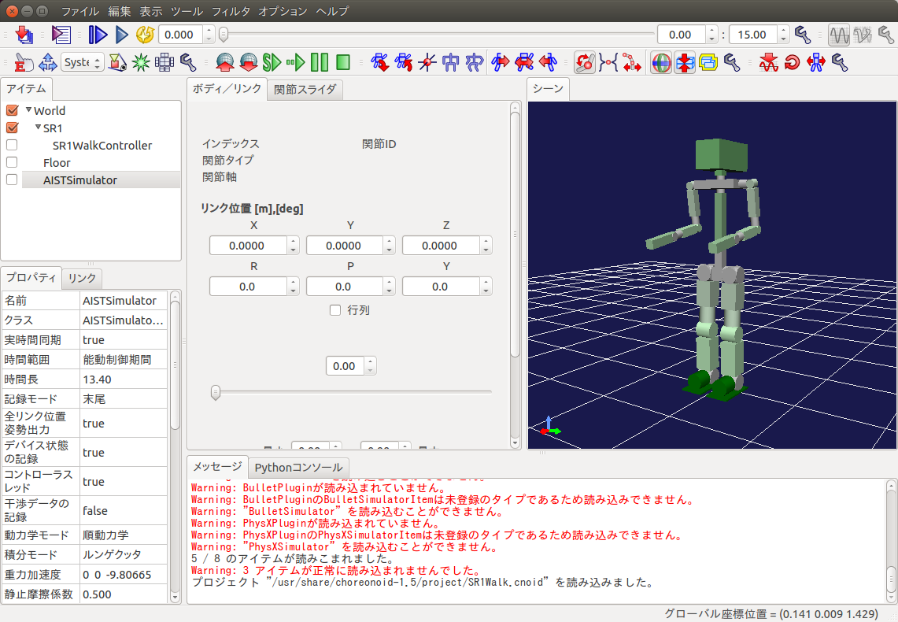
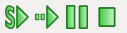
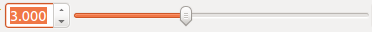
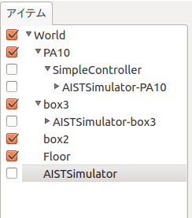
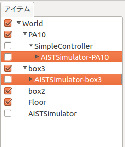
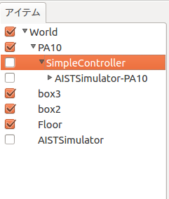
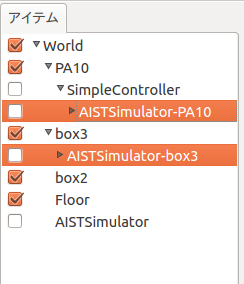
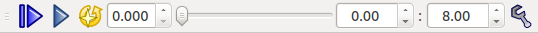
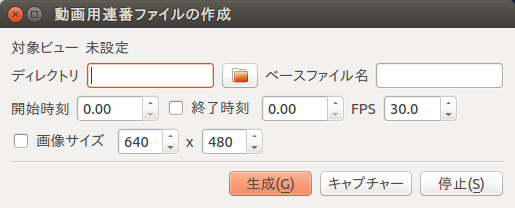

Choreonoidの基本操作¶
この節ではサンプルプロジェクトを用いて、Choreonoidの基本的な操作方法について解説します。
起動方法¶
サンプルプロジェクト「SR1Walk.cnoid」を起動と同時に開くため、端末を開いて以下のコマンドを実行してください。
$ choreonoid /usr/share/choreonoid-1.5/project/SR1Walk.cnoid
以下のような画面が表示されます。
注釈
Choreonoidの起動と同時に、OpenHRP形式のモデルを開く場合には以下のようにオプションを指定して実行することが可能です。
$ choreonoid --hrpmodel /usr/share/choreonoid-1.5/model/SR1/SR1.wrl
注釈
RTミドルウェアのネームサーバ「omniNames」(ネットワーク上に分散するRTCがどこにあるかを管理する仕組み)は、PCのIPアドレスが変わると古い情報が残っているせいで挙動がおかしくなる場合があります。そのような場合には以下の手順で古い情報を消去すると問題を解消することができます。
$ sudo /etc/init.d/omniorb4nameserver stop
$ rm /var/lib/omniorb4/* /var/log/omniorb*
$ sudo /etc/init.d/omniorb4nameserver start
画面構成¶
Choreonoidを起動すると表示される「メインウィンドウ」の構成は以下のようになっています。

メインメニュー¶
この例ではメインメニューはウィンドウのタイトルバーの中に表示しています。 Ubuntuの標準設定ではメニューバーの中ですが、[システム設定]-[外観]-[挙動]-[ウィンドウのメニューを表示]で変更可能です。
ツールバー領域¶
各種ツールバーを表示します。表示するツールバーの種類は[メインメニュー]-[表示]-[ツールバーの表示]でOn/Offが可能です。
ビュー領域¶
各種ビューを表示します。この例では「アイテム」「プロパティ」「リンク」「ボディ／リンク」「関節スライダ」「シーン」「メッセージ」「Pythonコンソール」のビューを表示しています。 複数のビューを重ねてタブで切り替えることも可能です。
表示するビューの種類は[メインメニュー]-[表示]-[ビューの生成]でOn/Offが可能で、[ビューの生成]で同じビューを複数表示することが可能です。例えば、シーンビューを複数表示して、複数視点のシミュレーション世界を表示したり、ロボットのカメラ映像などを表示することができます。
この例ではメッセージビューに赤字のメッセージがいくつか表示されています。Choreonoidの機能が正常に動作しない場合は、警告やエラーメッセージがメッセージビューに表示されているかもしれませんので確認して見てください。（この例ではODEやBulletなどのシミュレーションエンジンが使用できない旨の警告が表示されていますが問題ありません）
ステータスバー¶
メインウィンドウ下部のステータスバーは、Choreonoid上で現在進行中の処理内容を簡潔なメッセージで知らせるための領域です。
ステータスバーの領域は内部で２つに分かれており、基本的に左側では処理の開始や終了を告げるメッセージを表示し、右側では作業中のビューでマウスカーソルが指しているオブジェクトの状態を表示するようになっています。
注釈
グラフィックスドライバとの相性問題により、まれにChoreonoid内の画面をクリックしても3D表示部分以外は反応がなくなる場合があります。そのような場合はChoreonoidのウィンドウを一旦全画面表示を解除し、再び全画面にする（あるいはその逆の手順を行う）と復活します。
視点操作¶
シーンビューにマウスカーソルを合わせて、以下の操作を行うことによりシミュレーション世界の3Dグラフィックス表示を自在に操ることが可能です。
- 左ボタンドラッグでクリックした点周りに回転
- 中ボタンドラッグで並進
- ホイールで拡大縮小
- Shift+左ドラッグで真横、真上などにスナップ
また、ツールバーの下記シーンバーにあるボタン(全ての物体が見えるように視点を移動)を押すことで全体を俯瞰する視点に設定することが可能です。 視点位置がわからなくなった場合の初期化などに利用できます。

カメラの切り替え方法¶
シーンビューの表示に使用するカメラは、シーンバーのプルダウンで選択します。 変更したいシーンビューをフォーカスしておき、プルダウンメニューから表示したいカメラを選択してください。

追跡カメラ¶
カメラの視点をモデルに追従させたい場合などに、追跡視点に設定することが可能です。
- 追従させたいモデルのBodyItemの子アイテムとて、”BodyTrackingCameraItem”を生成し、チェックを入れる
- カメラ選択でこのアイテム名のカメラを選択
- “Keep Relative Attitude”プロパティをtrueにしておくと、カメラの向きもロボットに追従します
シミュレーションの開始、一時停止、停止方法¶
シミュレーションを開始するには、ツールバーの「シミュレーションバー」にある以下のボタンで行います。
左からそれぞれ以下のボタンになっています。
- 初期位置からのシミュレーションを開始
- 現在位置からのシミュレーションを開始
- シミュレーションの一時停止
- シミュレーションの停止
シミュレーションを一時停止しておき、タイムバーのスライダーやシミュレーション時間を直接入力してシミュレーション結果をみることができます。
一時停止したシミュレーションを再開するには「シミュレーションの一時停止」ボタンをクリックします。
シミュレーション結果の保存、読み込み、再生方法¶
Choreonoidでは、シミュレーション結果（動作軌道データ）を保存し、そのデータを使ってシミュレーション結果を再生することができます。 以下ではサンプルプロジェクト「PA10Pickup.cnoid」を例に説明します。
シミュレーション結果の保存¶
Choreonoidを起動します。
$ choreonoid /usr/share/choreonoid-1.5/project/PA10Pickup.cnoidシミュレーションを開始すると、ロボット等、動く物体のBodyItemの下（あるいはコントローラの下）に “AISTSimulator-XXX” といった名前でBodyMotionアイテムが生成されます。これがシミュレーション結果を格納している動作軌道データです。以下の例では、”PA10”と”box3”アイテムにBodyMotionアイテムが生成されています。
シミュレーション開始前 シミュレーション開始後 
 各BodyMotionアイテムを選択状態にして（まとめて選択してもOK)、[ファイル]-[名前を付けて選択アイテムを保存]で保存します。
保存するファイルは各BodyMotionアイテム毎になりますので、どのアイテムのデータかがわかるようなファイル名にしておきます。
注釈
アイテムビューで複数のBodyItemをまとめて選択するには、Ctrlキーを押しながらクリックして選択します。
Shiftキーを押しながらクリックすると、リストの始点・終点間を選択することができます。
シミュレーション結果の読み込みと再生¶
シミュレーションを実行したChoreonoidを一旦終了し、再度Choreonoidを起動します。
$ choreonoid /usr/share/choreonoid-1.5/project/PA10Pickup.cnoidアイテムビューで該当するBodyItemを選択した状態で対応するファイルの読み込みを行います。読み込みは、[ファイル]-[読み込み]-[ボディモーション]で行います。
読み込み前(BodyItemを選択) 読み込み後 
 同様に、他のBodyItemのデータを読み込みます。
読み込んだ動作データを再生するには、それらを選択しておく必要があります。（複数物体がある場合は、全てのBodyMotionアイテムを選択します）
タイムバーの「アニメーションを開始」ボタンでシミュレーション結果を再生できます。

閲覧モードと編集モード¶
シーンビューでは、通常は閲覧モードでシミュレーション世界の3Dグラフィックス表示を操ることができますが、編集モードに切り替えてシミュレーション世界の物体を操作することができます。
- ESCキー or 背景をダブルクリックでモードを切り替えることができます。
- エディットモードのときはマウスカーソルが手のアイコンになります
- 視点を操作するつもりが物体を操作してしまうことを防ぐため、通常は閲覧モードにしておきます
- 編集モードの時は物体を引っ張ったりできる
- 初期状態の設定（シミュレーション前）
- ロボットに外力を加える（シミュレーション中）
シミュレーション結果の動画作成方法¶
動画にしたい動きをタイムバーの再生ボタンで再生できる状態にしておきます。

[ツール]-[Movie Generator]を実行します。すると「動画用連番ファイルの作成」ダイアログが表示されます。
各種パラメータを設定します。
- 対象とする「シーン」ビューをクリックして「対象ビュー」を設定
- 「ディレクトリ」で連番画像ファイルを出力するディレクトリを設定
- 「ベースファイル名」に連番画像ファイルのベースとなる名前を設定
- 「開始時刻」、「終了時刻」を設定
- 「FPS」にフレームレートを設定
- 「画像サイズ」にチェックを入れると、画像サイズを指定できます。これについては、単に対象のビューの描画領域のサイズを一時的にそのサイズにするだけの機能です。このため注意として、もとのビューの大きさがここで指定する大きさ以上である必要があります。少し大きめにビューのサイズを変更してから実行するとよいかと思います。
「生成」ボタンを押して連番画像ファイルを出力します。 指定したディレクトリに次のような連番画像ファイルが作成されます。

連番画像ファイルから動画を生成するコマンドを使用して動画を生成します。
$ avconv -i scene%08d.png -r 30 -an -vcodec libx264 -pix_fmt yuv420p video.mp4